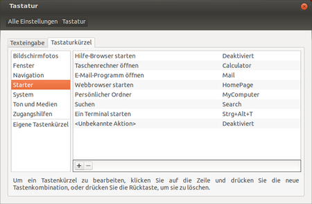
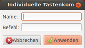

GNOME Tastenkürzel
Dieser Artikel wurde für die folgenden Ubuntu-Versionen getestet:
Ubuntu 14.04 Trusty Tahr
Zum Verständnis dieses Artikels sind folgende Seiten hilfreich:
 Viele Notebooks oder aktuelle Tastaturen haben Sondertasten. Beispielsweise erfolgt die Lautstärkeregelung bei vielen Modellen über elektronische Tasten. Diese Sondertasten können unter GNOME frei belegt werden. So kann man den Browser starten lassen, eine Suche nach Dateien auslösen usw. Außerdem ist es möglich mit eigenen Tastenkombinationen Befehle und Programme zu starten.
Viele Notebooks oder aktuelle Tastaturen haben Sondertasten. Beispielsweise erfolgt die Lautstärkeregelung bei vielen Modellen über elektronische Tasten. Diese Sondertasten können unter GNOME frei belegt werden. So kann man den Browser starten lassen, eine Suche nach Dateien auslösen usw. Außerdem ist es möglich mit eigenen Tastenkombinationen Befehle und Programme zu starten.
Sondertasten aktivieren¶
GNOME selbst bringt schon ein Programm mit, mit dem diesen Tasten Funktionen zugewiesen werden können. Zu finden ist dies bei Unity/GNOME 3 unter 
"Systemeinstellungen → Tastatur → Tastenkürzel".
 Dort sucht man sich entweder einen vorgefertigten Befehl, wie z.B: "Ein Bildschirmfoto aufnehmen" aus und weist diesem Befehl eine Taste oder eine Tastenkombination zu, indem man auf eine Aktion klickt und die Taste drückt, die diese Funktion ausführen soll. Alternativ klickt man auf das "+" um ein eigenes Tastenkürzel festzulegen.
Wenn man auf das "+" klickt, erscheint ein Fenster, in dem man den Namen und den Befehl dieses Tastenkürzels eingibt, der ausgeführt werden soll. Durch den Button "-" kann man selbst erstellte Tastenkürzel wieder löschen. Möchte man eine Tastenkombination deaktivieren, dann klickt man diese Tastenkombination an und betätigt die Backspace-Taste ⌫ .
 Übersichtsseite
Übersichtsseite- Erstellt mit Inyoka
-
 2004 – 2017 ubuntuusers.de • Einige Rechte vorbehalten
2004 – 2017 ubuntuusers.de • Einige Rechte vorbehalten
Lizenz • Kontakt • Datenschutz • Impressum • Serverstatus -
Serverhousing gespendet von